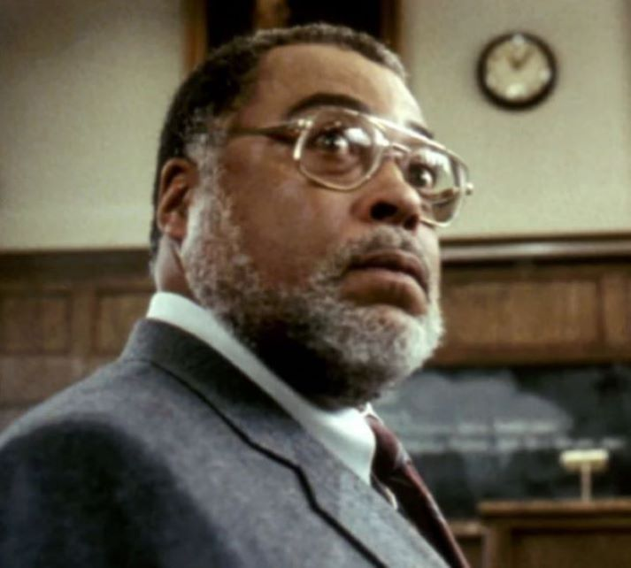

Why did they think this was okay? The fact that this was though to be okay in the 1980s was an insane idea. This story follows Mark Watson (C. Thomas Howell), a well-off white student got accepted into Harvard Law School, but whose wealthy father won't pay for his tuition. So, he does the only sensible thing: use tanning pills to pass as African-American student to apply for a black-only scholarship with the help of your friend Gordon (Arye Gross)! Through his experiece he attempts to earn the favour of his African-American history professor (James Earl Jones) while maneuvering through relationships with fellow students Whitney Dunbar (Melora Hardin) and Sarah Walker (Mae Dawn Chong).
Put simply this shouldn't exist. While the film advertises itself as a comedy, its attempts at humour fall into attempts to comment on racist stereotypes held by white people. However, each joke comes off in way that is either racist itself, or is completely unfunny and juvenile. All of this was meant to satirize affirmative action (a bold choice that has now become relevant in the United States under the Trump administration), but given the fact our protagonist is a wealthy white kid (albeit one qualified) who steals a scholarship from an African-American woman (Chong), it just feels like a fantasy from teh reagan administration (No wonder he liked it). Not so fun fact: Ron Reagan Jr. makes a cameo in this film. Even less fun fact:This film was screened at the whitehouse by Reagan himself, who enjoyed the movie. Honestly, I don't have much more to say about this one. Its humour is horrendous and crude in a way that leaves a sour taste in my mouth, and the commentary falls flat from the get go.
1/10